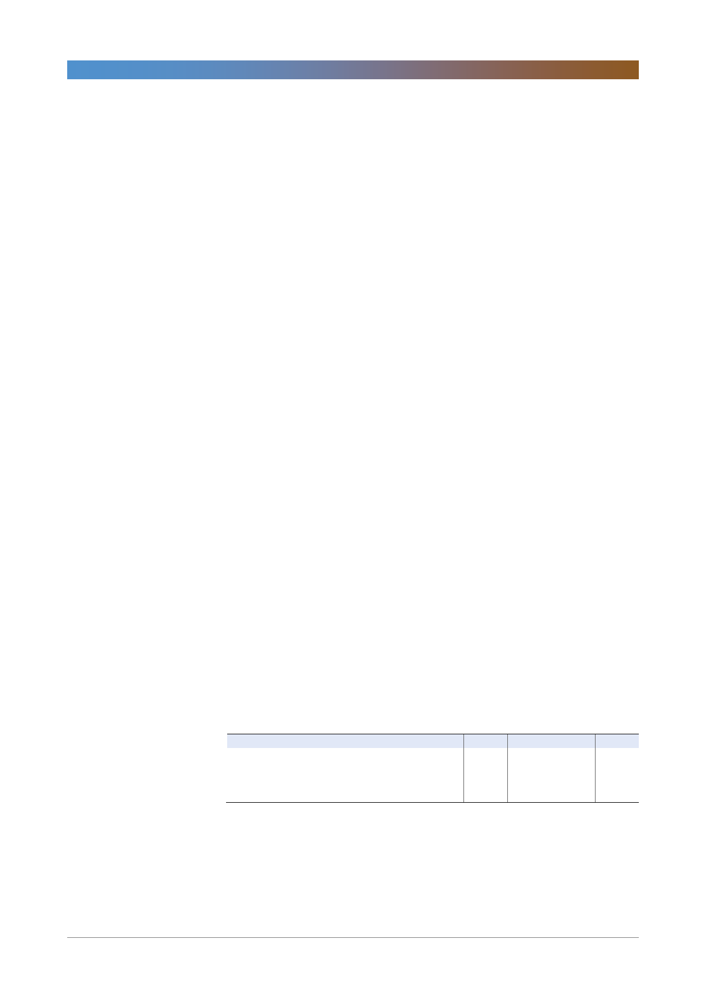

삼성생명(032830)
컨퍼런스콜 Q&A 요약
1. 내년 보장성 APE 및 신계약가치 성장률 전망
- 보장성 시장에 대한 우려 있음. 전체 보장성 시장 규모가 올해와 비슷할
전망(종신/사망은 줄고, 건강보험은 늘고)
- GA 등 당사가 취약한 채널에서 건강보험 시장 타깃
- 보장성 신계약 규모 금년 대비 5% 신장 계획
2. 날짜 효과 감안시 손해율이 더 좋아질 수 있었다고 생각하는데, 지속 가능한
손해율 수준은?
- 전년 3분기 손해율은 80.2%, 이번 3분기 손해율은 82.0%로 추석연휴로
인한 영업일수 감소(3일)에 따라 전년 동기 대비 개선 요인이 있었지만,
5~6월 금감원 검사 이후 유암종/실손 지급 등 270억원 발생(2.5~3%p
영향)
- 연말 기준 손해율 80% 초반대로 전년 대비 2%p 상승 예상
3. 연초 보험손익 가이던스 1.7조원(2017년 1.6조원 대비 증가) 달성은 어려워
보임. 2019년 전망
- 사치/비차 각각 일회성 요인으로 가이던스 달성 어려움
- 고강도 비용 절감 등으로 가이던스 높게 설정했는데 신계약비 이연상각이
경영 계획에 미반영(800억원)
- 내년은 비차익이 올해보다 개선(이연상각비 500억 감소)
- 감독당국 지급권고 370억, 실손 지급보험금 증가가 사차익 부진 영향인데,
내년 손해율은 80%대 초반 예상
4. GA채널 영업전략?
- 올해 GA채널을 통해서 보장성 판매 강화. 간편종신, CI종신 등 종신상품이
중심
- 암/치아 건강보험도 GA채널에 출시했지만 전체적인 규모는 크지 않았음
- 내년 GA를 통해 건강보험으로 상품 확대할 계획 있음. 그러나 GA채널에
서 큰 폭의 건강보험 물량 증가는 어려움.
<표 1> 3분기 실적 및 컨센서스
보험영업수익
보험손익
투자손익
당기순이익
3Q17
4,222
205
1,712
320
4Q17
4,080
(181)
1,564
(72)
주: 당기순이익은 지배주주순이익 기준
자료: 삼성생명, 한국투자증권
1Q18
4,103
(384)
1,981
390
2Q18
4,094
(61)
3,027
1,056
3Q18P
4,110
(301)
1,837
280
QoQ(%)
0.4
NM
(39.3)
(73.5)
(단위: 십억원)
YoY(%)
(2.7)
NM
7.3
(12.7)
컨센서스
4,419
(48)
1,882
349
2